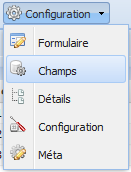

Figure 22 : option détails du menu.
L’option Détails permet d’activer/désactiver les détails de la définition de la meta. Un détail est un sous-ensemble d’attributs d’une entité enfant. On navigue vers une entité enfant en cliquant sur un des détails disponibles dans l’entité parente. Les détails d’une entité sont accessibles à partir du menu de navigation ( voir navgation ). Dans toutes le vues, tous les détails sont activés par défaut, mais il est possible de les activer ou les désactiver dans la définition de la meta.
Figure 23 : liste de détails.
Pour activer ou désactiver les détails, crochez ou décrochez la caisse située à gauche du détail.
Ensuite, enregistrez les changements en cliquant sur le bouton Mettre à jour la méta.
Figure 24 : détails d’une vue afichés dans le menu de navigation.